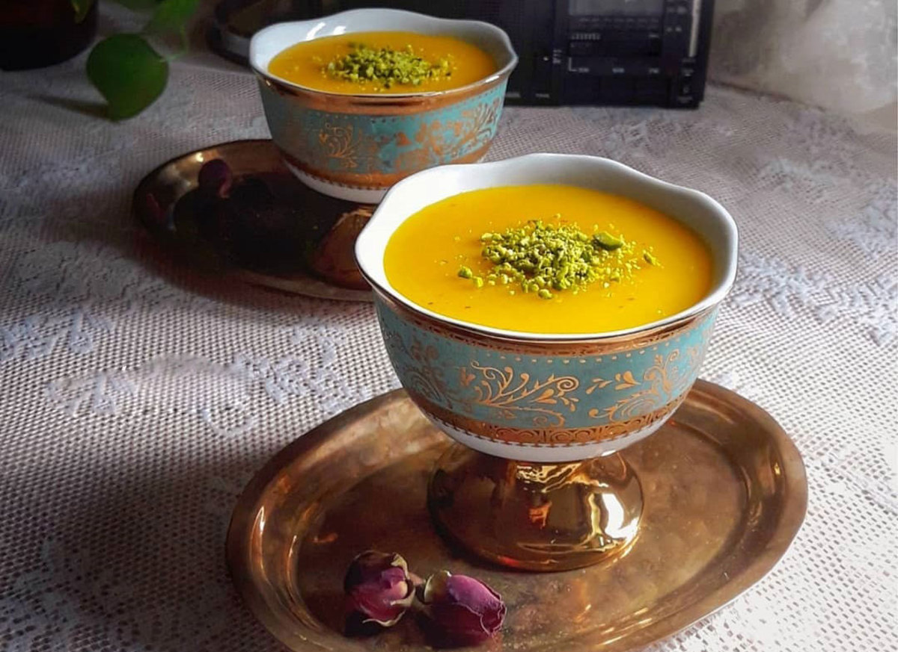
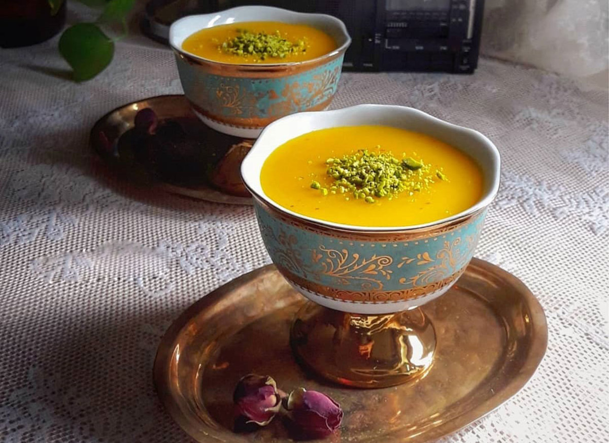

انواع ویتامین ها و مواد مغذی در سوهان وجود دارد که همین مواد باعث شده اند تا سوهان به عنوان یک ماده مفید و مقوی شناخته شود. علاوه بر این، وجود چنین موادی در سوهان باعث شده است تا از آن به عنوان یک ماده ی
مفید در کنترل و درمان انواع بیماری ها یاد شود
تامین انرژی روزانه ✔
خواص آنتی اکسیدانی ✔
استحکام استخوان ها✔
کاهش کلسترول خون ✔
بهبود عملکرد مغز ✔
بهبود سوخت و ساز بدن ✔
جوانه گندم منبع خاصیت اصلی سوهان محسوب میشود. رنگ قهوهای روشن و عطر و طعم سوهان از جمله مواردی است که نشاندهنده کیفیت آن بوده و این موارد به مواد اولیه آن بستگی دارد. بیشتر خاصیت سوهان به دلیل جوانه گندم بوده به همین دلیل پروتئین فراوانی دارد و منبع فوقالعادهای از ویتامینها و مواد آرامبخش اعصاب و روان است

 
